Authors: Moritz K. A. Baumgarten, Hamlin Wu, Tong Jiang, Joonho Lee
Type: theory · Category: numerical methods · PDF: https://arxiv.org/pdf/2605.05675v1
Analysis basis: abstract only; PDF text extraction failed or PDF unavailable
Summary. The authors present a new, scalable variational method for calculating the properties of polarons in real materials. By avoiding supercells and using a momentum-projected approach, the method works efficiently across both weak and strong electron-phonon coupling regimes. This provides a systematically improvable way to study polaron physics in the thermodynamic limit.
Why it may be interesting. not directly relevant
Main problem. Developing a scalable and translationally invariant method to study ab initio polarons across different coupling regimes without the computational cost of supercells.
Main result. The introduction of a scalable variational theory that achieves near-linear scaling with k-points and accurately captures both delocalized and self-trapped carriers.
Method. A momentum-projected Toyozawa-type wavefunction combined with a low-rank factorization of the electron-phonon kernel.
Model / system. The study applies the method to the Fröhlich model and real materials including LiF, anatase TiO2, and rutile TiO2.
Key observables. Polaron binding energies, thermodynamic-limit band structures, and real-space measures of polaron extent.
Important parameters / regimes. Weak-coupling and strong-coupling regimes, and the number of k-points.
Assumptions / limitations. The method assumes a momentum-projected variational ansatz and utilizes low-rank factorization of the electron-phonon kernel.
Paper structure. The paper introduces a new variational theory, demonstrates its scalability via k-point scaling, and validates it through benchmarks against the Fröhlich model and first-principles data (LiF, TiO2), including a comparison with DiagMC.
We introduce a scalable, translationally invariant variational theory for ab initio polarons that remains applicable across coupling regimes without resorting to supercells. Our approach combines a momentum-projected Toyozawa-type wavefunction with a low-rank factorization of the electron-phonon kernel, enabling near-linear scaling with the number of $\mathbf{k}$-points while capturing both delocalized and self-trapped carriers. Benchmarks for the Fröhlich model, LiF, and anatase and rutile TiO$_2$ yield accurate polaron binding energies, thermodynamic-limit band structures, and transparent real-space measures of polaron extent. For LiF, comparison with first-principles diagrammatic Monte Carlo (DiagMC) reveals close agreement for the weak-coupling electron-polaron ground state and band structure. However, in the hole-polaron of LiF, which is in the strong-coupling regime, we found a significant bias in DiagMC results. These results establish momentum-projected variational wavefunctions as a systematically improvable route to thermodynamic limit studies of polarons in real materials.
Authors: Ying-Fei Zhang, Zhi-Fan Zhang, Zhen-Gang Zhu, Gang Su
Type: theory · Category: strongly correlated electrons · PDF: https://arxiv.org/pdf/2605.06299v1
Analysis basis: full PDF text, analyzed in chunks
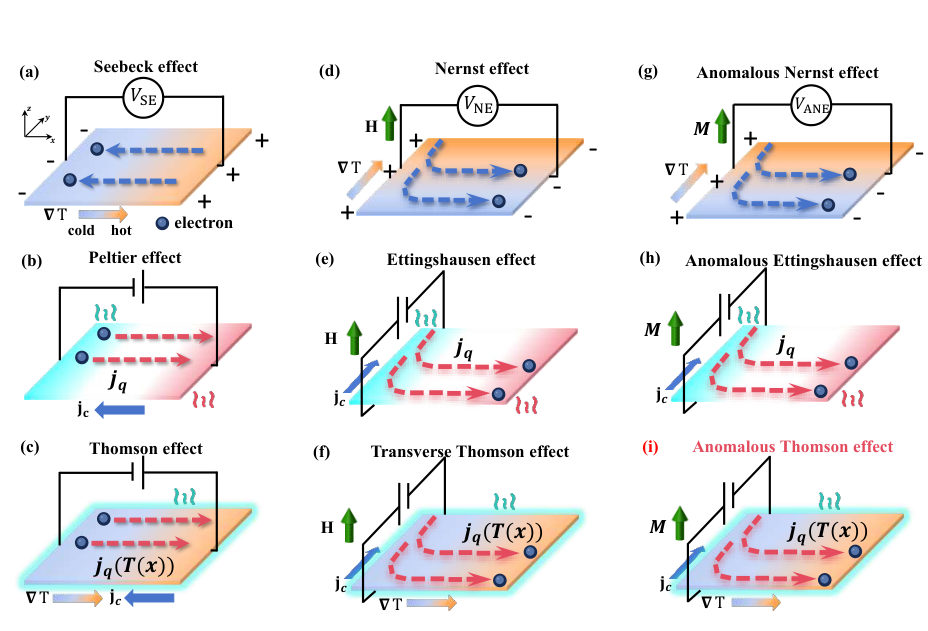
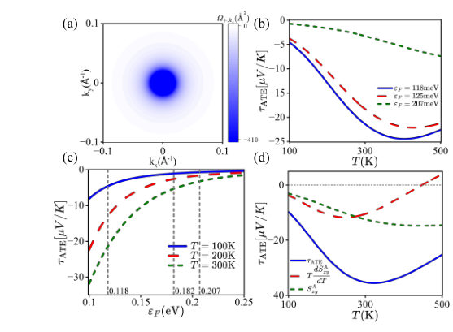
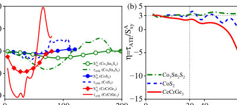
Summary. This paper proposes the Anomalous Thomson Effect, a new transverse thermoelectric phenomenon driven by Berry curvature. It demonstrates that this effect can be significantly stronger than the Anomalous Nernst Effect, offering a promising mechanism for efficient solid-state cooling in magnetic materials.
Why it may be interesting. not directly relevant
Main problem. The paper proposes and investigates a new thermoelectric phenomenon called the Anomalous Thomson Effect (ATE) and evaluates its potential for solid-state refrigeration.
Main result. The authors derive that the Anomalous Thomson Coefficient (ATC) is generally enhanced relative to the Anomalous Nernst Coefficient (ANC), reaching a ratio of 3 in the low-temperature limit and up to 15 in CeCrGe3 at liquid-nitrogen temperatures.
Method. The study uses the Boltzmann transport equation, Onsager reciprocity relations, and the Debye model approximation to derive transport coefficients and evaluate experimental data.
Model / system. The research focuses on magnetic materials with Berry curvature, specifically using a massive Dirac model to represent the topological layered kagome ferromagnet Fe3Sn2 and analyzing materials like CoS2, Co3Sn2S2, and CeCrGT3.
Key observables. Anomalous Thomson Coefficient (ATC), Anomalous Nernst Coefficient (ANC), electrical conductivity, anomalous Hall conductivity, and heat current density.
Important parameters / regimes. Fermi energy (epsilon_F), temperature (T), Berry curvature, and the low-temperature limit (T -> 0).
Assumptions / limitations. The transport is assumed to be dominated by a narrow energy range around the Fermi energy, and the Debye model is used for the wave vector cutoff.
Figures summary. Figure 1 shows schematics of various thermoelectric effects; Figure 2 displays Berry curvature contours, the temperature dependence of the ATC, and the evolution of the coefficient with Fermi energy; Figure 3 compares experimental ANC data for various materials.
Paper structure. The paper introduces the ATE concept, provides a theoretical derivation using a Dirac model, explores the relationship between ATC and ANC, applies the theory to specific magnetic materials, and concludes with the potential for refrigeration applications.
We propose an effect named the anomalous Thomson effect (ATE), analogous to the anomalous Hall effect and the anomalous Nernst effect (ANE). The anomalous Thomson coefficient (ATC) is derived as a function of the anomalous Nernst coefficient (ANC); hence, the ATC inherits the same mechanisms of the ANC. Specifically, we study a massive Dirac model for Fe3Sn2 to capture intrinsic Berry-curvature-driven transport. Our results show that the ATC is generally enhanced relative to the ANC. In the low-temperature limit, the ratio ATC/ANC approaches three. Since the relation between the ATE and the ANE is model-independent, we utilize experimental ANE data to infer experiment-related ATC for CoS2, Co3Sn2S2, and CeCrGe3. We find that the ATC for CeCrGe3 can be as large as fifteen times the ANC in the liquid-nitrogen temperature regime, making this effect highly attractive for solid-state thermoelectric refrigeration in this temperature range. It is important to emphasize that the proposed ATE can be directly verified using existing ANE data, without the need for additional equipment or measurements.
Authors: Marco Agozzino, Eleonora Moroni, Yifan Zhang, Valeria Russo, Carlo Spartaco Casari
Type: experiment · Category: other · PDF: https://arxiv.org/pdf/2605.06186v1
Analysis basis: full PDF text, analyzed in chunks
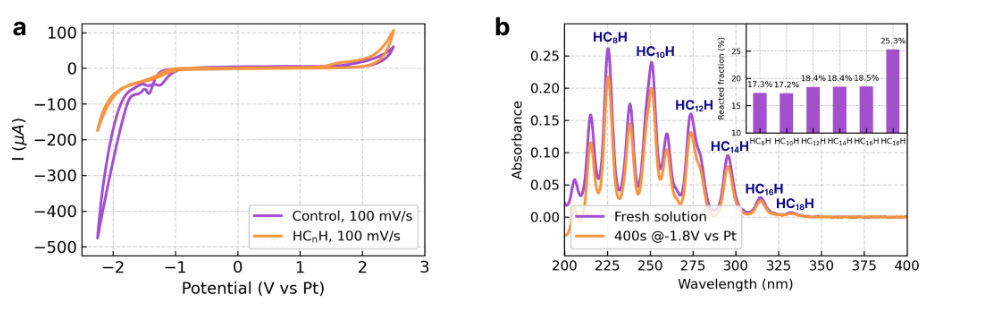
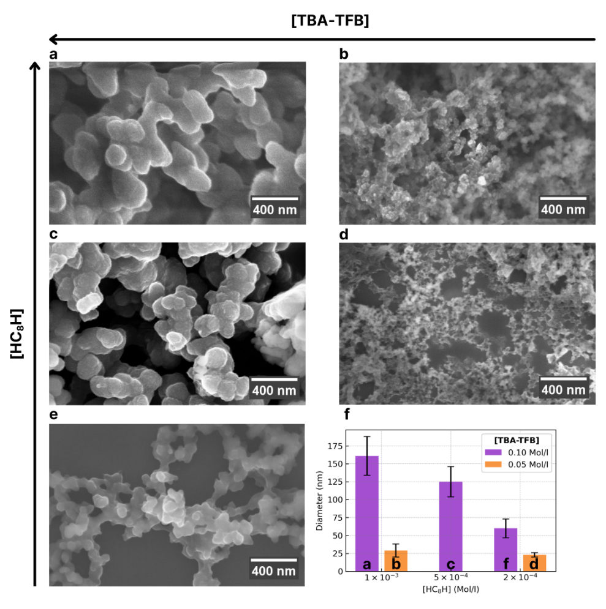
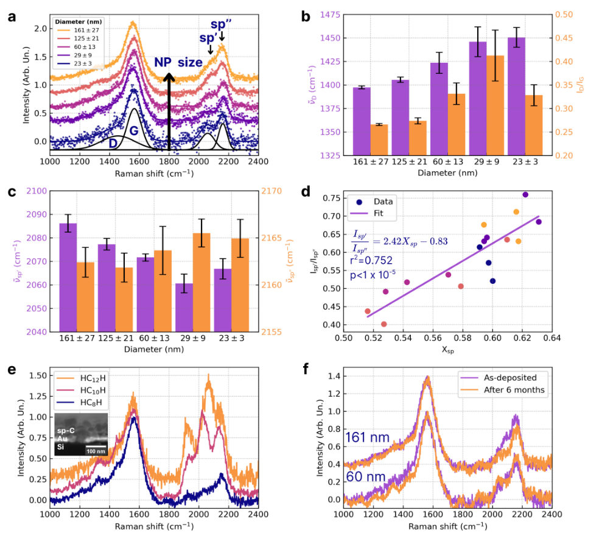
Summary. This paper demonstrates a method to electrochemically synthesize stable, amorphous carbon nanoparticles containing a high percentage of sp-hybridized carbon. By controlling the reduction kinetics, the researchers achieved tunable particle sizes and unprecedented ambient stability for these nanostructures.
Why it may be interesting. not directly relevant
Main problem. Developing a bottom-up electrochemical approach to synthesize amorphous sp-sp2 carbon nanoparticles that preserve a high sp-fraction and exhibit high ambient stability.
Main result. The electrochemical reduction of polyynes produces amorphous carbon nanoparticles with a high sp-fraction (>60%) and tunable diameters, which remain stable in ambient conditions for over six months.
Method. Electrochemical reduction of hydrogen-capped polyynes in acetonitrile using a three-electrode cell, followed by characterization via Raman spectroscopy, SEM, and UV-Vis spectroscopy.
Model / system. The physical system consists of carbon atomic wires (CAWs) in the form of hydrogen-capped polyynes (HCnH, 8 <= n <= 18) in an acetonitrile electrolyte with TBA-TFB.
Key observables. sp and sp2 carbon fractions (Xsp, Xsp2), nanoparticle diameter, Raman band frequencies (D and G bands), and I_D/I_G ratio.
Important parameters / regimes. Applied potential (-1.8 V vs Pt), reduction duration (400 s), and precursor/electrolyte concentrations.
Assumptions / limitations. The calculation of sp content assumes negligible sp3 content and relies on a specific Raman scattering cross-section ratio of 0.48.
Figures summary. Figure 1 shows cyclic voltammetry and absorption spectra indicating polyyne consumption; Table 1 relates nanoparticle diameter to sp content; Figure 3 shows Raman fingerprints and long-term stability.
Paper structure. The paper introduces the synthesis problem, describes the electrochemical experimental setup and precursor preparation, presents results on morphology and structural ordering, discusses the mechanism of chain preservation and stability, and concludes with future outlooks.
Carbon Atomic Wires (CAWs) are finite linear chains of sp-hybridized carbon atoms. Here the electrochemical reduction of CAWs in the form of polyynes (i.e. with alternated single-triple bonds) is reported. Upon applying a reducing potential to a solution containing polydispersed hydrogen-capped polyynes, the formation of a black precipitate was observed. Electronic absorption spectroscopy confirmed the irreversible reaction of the carbon chains while excluding degradation or side reactions. Subsequent analyses revealed that the precipitate consisted of amorphous carbon nanoparticles with tunable diameters. This control over particle size is attributed to the modulation of growth kinetics through restricted mass transport toward the solid-liquid interface. Raman spectroscopy showed that the resulting material exhibits an amorphous sp-sp2 character, with a retained sp fraction exceeding 60%. Smaller nanoparticles displayed reduced disorder within the sp2 domains and a broader distribution of sp-chain lengths preserved in the amorphous matrix. Additional experiments on size-selected polyynes suggest that this synthesis method allows to better preserve the starting chain length in the final structure. Unlike previously reported amorphous sp-sp2 carbon networks, the nanoparticles produced in this study show remarkable stability under ambient conditions, retaining their sp character for times in excess of six months. These findings pave the way for future applications, particularly as further diameter tuning may enable access to the quantum-dot regime.
Authors: Brenda Bracco, Michele Magnozzi, Stefano Colace, Maurizio Canepa, Giulio Favaro, Marco Bazzan, Massimo Granata, David Hofman, Alessandro Di Michele, Laura Silenzi, Gianpietro Cagnoli, Giovanni Carlotti, Paola Sassi, Silvia Corezzi
Type: experiment · Category: disordered systems and neural networks · PDF: https://arxiv.org/pdf/2605.06282v1
Analysis basis: full PDF text, analyzed in chunks
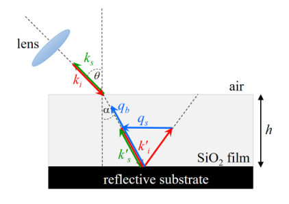
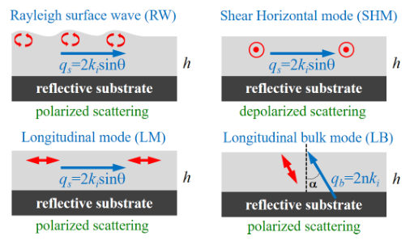
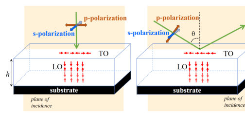
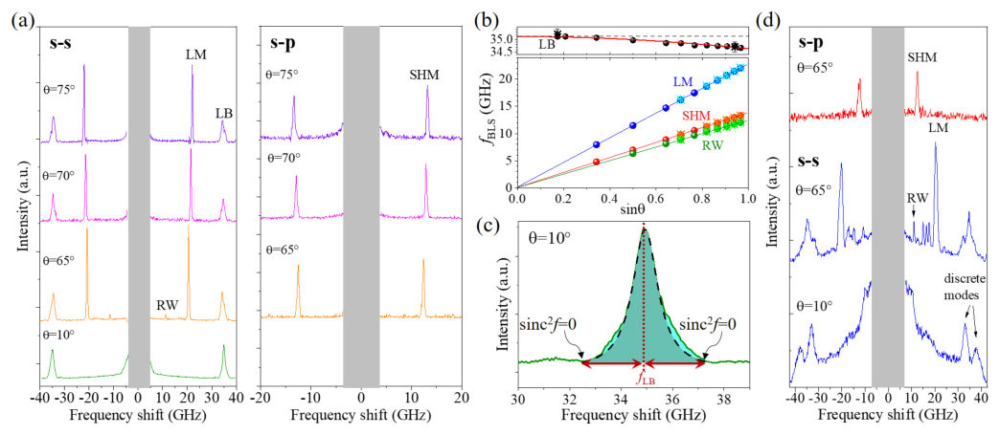
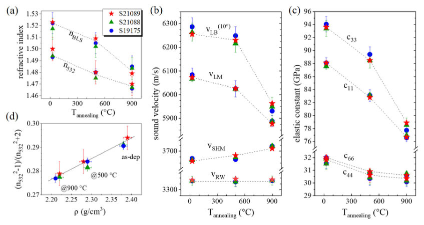
Summary. This paper demonstrates that silica thin films used in gravitational-wave detectors are not isotropic but exhibit significant compressive anisotropy along the growth axis. It shows that while standard annealing does not fix this, high-temperature treatment can restore isotropy, potentially reducing thermal noise in future detectors.
Why it may be interesting. not directly relevant
Main problem. The study investigates whether the assumed elastic isotropy in ion-beam-sputtered silica thin films is valid, as unmodeled anisotropy may contribute to thermal noise in gravitational-wave detectors.
Main result. The researchers discovered that as-deposited silica films exhibit cylindrical elastic symmetry with a 6% compressive anisotropy along the film normal, which can be nearly eliminated through high-temperature (900 C) annealing.
Method. The study uses Brillouin Light Scattering (BLS) to probe GHz-frequency elastic constants, alongside Infrared (IR) reflectivity, X-ray Reflectivity (XRR), and Spectroscopic Ellipsometry (SE) to characterize structural and optical properties.
Model / system. The physical system consists of ion-beam-sputtered (IBS) SiO2 thin films on silicon or sapphire substrates, modeled as transversely isotropic media with five independent elastic constants.
Key observables. Elastic constants (c11, c33, c44, c66, c13), acoustic wave velocities, refractive index, mass density, and oxygen structure distribution (bridging vs. non-bridging).
Important parameters / regimes. GHz-range acoustic frequencies, annealing temperatures (as-deposited, 500 C, and 900 C), and the ratio of film thickness to phonon wavelength.
Assumptions / limitations. The study compares GHz-range BLS measurements to kHz-range mechanical properties, assuming negligible mechanical relaxations in the frequency range between the two.
Figures summary. Figures include schematics of BLS backscattering geometry and acoustic wave types, IR spectroscopy mode configurations, and various spectra/plots for XRR, ellipsometry, and elastic constant evolution.
Paper structure. The paper introduces the problem of thermal noise in GW detectors, describes the experimental setup for BLS and IR spectroscopy, presents the discovery of elastic anisotropy, analyzes the effects of thermal annealing on structural and elastic properties, and concludes with implications for coating design.
The thermal noise of mirror coatings for gravitational-wave detectors critically depends on the elastic properties of the constituent materials. Data analyses and theoretical models typically assume each material is homogeneous and isotropic, but isotropy has never been explicitly verified. Using Brillouin light scattering (BLS), we demonstrate for the first time that ion-beam-sputtered SiO2 -- a material still viable for future mirror coatings -- exhibits cylindrical elastic symmetry, with in-plane isotropy but a notable 6% compressive anisotropy along the film normal. This anisotropy remains unchanged after the post-deposition heat treatment currently used in ground-based detectors (500 $^\circ$C, 10 h) but is nearly eliminated at 900 $^\circ$C. Infrared reflectivity experiments support these findings by directly revealing heterogeneities in the distribution of bridging and non-bridging oxygen structures along the growth axis. While BLS measures the real part of the elastic constants at GHz frequencies, the data reveal negligible contributions from mechanical relaxations in the kHz-GHz range, making BLS a valid substitute for low-frequency properties obtained from standard anisotropy-insensitive techniques. Our results highlight that restoring isotropy through heat treatment -- by softening the material, enabling more than 7% out-of-plane expansion, and smoothing out structural heterogeneities -- may play a key role in reducing thermal noise. This proof-of-concept study extends beyond silica, providing critical insights for the design of future coatings.
Authors: Josue Rodriguez, Ruishi Qi, Catherine Xu, Feng Wang, James G. Analytis, Hossein Taghinejad
Type: experiment · Category: strongly correlated electrons · PDF: https://arxiv.org/pdf/2605.06645v1
Analysis basis: full PDF text, analyzed in chunks
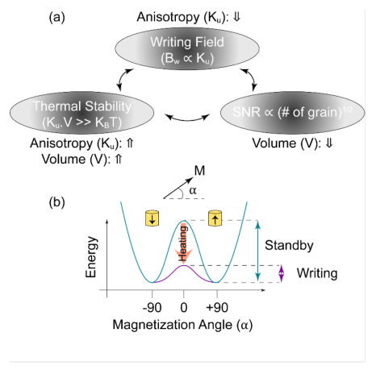
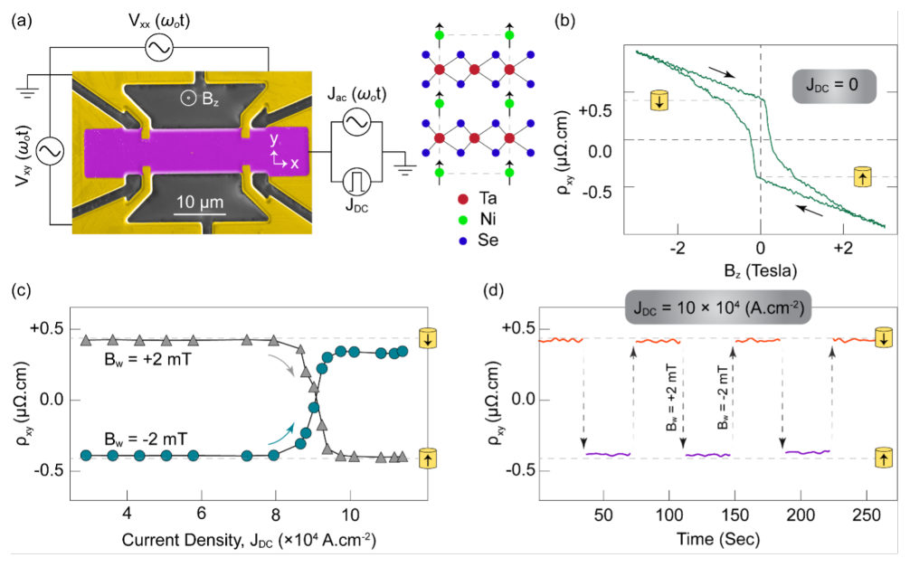
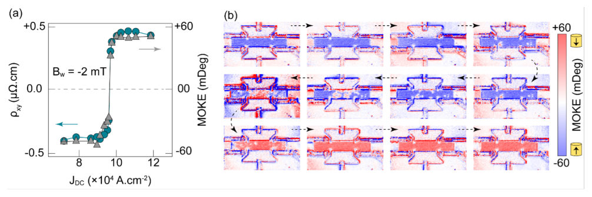
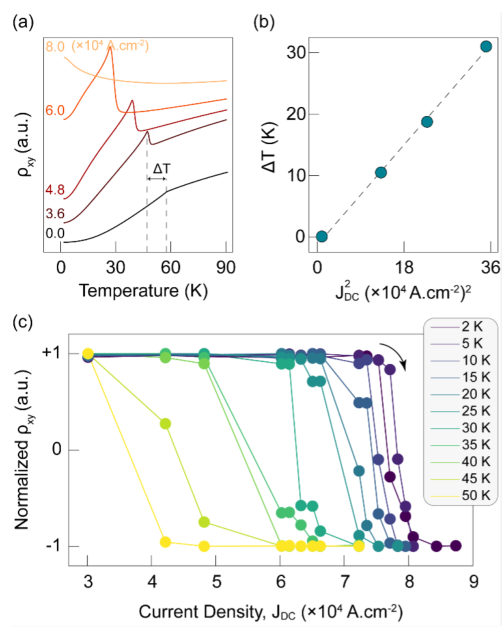
Summary. This paper presents a method for all-electronic heat-assisted magnetic recording using the 2D magnet Ni1/4TaSe2. By using Joule heating from electrical pulses to transiently heat the material above its Curie temperature, the authors can switch magnetic states using much smaller magnetic fields than usual. This approach offers a path toward highly scalable, energy-efficient, and integrated magnetic memory for next-generation computing.
Why it may be interesting. not directly relevant
Main problem. The magnetic recording trilemma makes it difficult to scale high-density storage without sacrificing thermal stability or writability. Existing Heat-Assisted Magnetic Recording (HAMR) relies on bulky laser optics, which are hard to integrate into on-chip architectures.
Main result. The authors demonstrate an all-electronic variant of HAMR using Joule heating in the 2D magnet Ni1/4TaSe2, allowing magnetization reversal with a magnetic field 100 times smaller than the coercive field.
Method. The researchers used transport measurements (Anomalous Hall Effect) and MOKE imaging on Hall-bar devices patterned from Ni1/4TaSe2 crystals via focused-ion beam milling to observe magnetization switching induced by current pulses.
Model / system. The physical system is an intercalated 2D itinerant metallic ferromagnet, Ni1/4TaSe2, which features perpendicular magnetic anisotropy and a Curie temperature of approximately 55 K.
Key observables. Anomalous Hall resistivity (rho_xy), longitudinal resistivity (rho_xx), coercive field (Bc), and the shift in apparent Curie temperature (Delta T).
Important parameters / regimes. Coercive field of ~0.2 T, writing field of ~2 mT, threshold current density of ~10 x 10^4 A/cm^2, and current pulse duration of 1 ms.
Assumptions / limitations. The demonstration is currently limited to low-temperature regimes (cryogenic temperatures) where the material is ferromagnetic.
Figures summary. Figure 1 introduces the magnetic recording trilemma and the HAMR concept; Figure 2 shows the device SEM image, Hall hysteresis loops, and response to current; Figure 4 illustrates the temperature dependence of resistance and the quadratic scaling of temperature shift with current density.
Paper structure. The paper begins by motivating the need for electronic HAMR, introduces the Ni1/4TaSe2 material and device fabrication, presents transport measurements establishing the magnetic baseline, demonstrates the current-induced switching mechanism, provides evidence for Joule heating via temperature scaling, and concludes with potential applications and limitations.
The ever-increasing demand for fast, reliable, and energy-efficient information storage continues to push magnetic memory technologies toward their fundamental limits. Conventional scaling strategies, which rely on reducing bit size, inevitably run into the "magnetic recording trilemma," where signal-to-noise ratio, thermal stability, and writability cannot all be optimized simultaneously. Heat-assisted magnetic recording (HAMR) has emerged as the leading solution, enabling high-density storage by transiently heating the medium during the write cycle. However, the reliance on laser optics and plasmonic transducers restricts HAMR primarily to hard-disk drives, limiting its integration with on-chip or embedded architectures. Here, we demonstrate an electronic variant of HAMR in which Joule heating from low-current density current pulses facilitates data writing, while the anomalous Hall effect provides electronic readout. Employing intercalated 2D magnet Ni$_{1/4}$TaSe$_2$, we show direct evidence that current pulses heat the material above its Curie temperature, during which a small magnetic field of ~2mT (100 times smaller than the coercive field) enables efficient data writing. The all-electronic approach combined with the 2D magnetic medium creates timely opportunities to revisit the energy-assisted magnetization recording, enabling new recording schemes that combine fundamental novelty with technological impact.
Authors: M. V. Parfenov, V. S. Khrapai, I. S. Burmistrov
Type: theory · Category: disordered systems and neural networks · PDF: https://arxiv.org/pdf/2605.05847v1
Analysis basis: full PDF text, analyzed in chunks
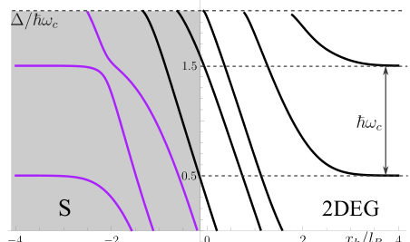
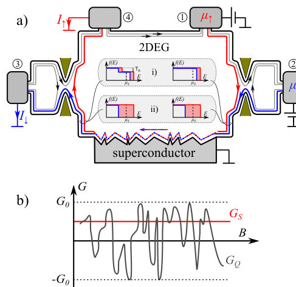
Summary. This paper shows that the topological protection in 2DEG-superconductor hybrids is preserved through spin transport even when charge transport is disrupted by disorder. It predicts an even-integer quantized spin conductance and proposes an electrical setup to detect this effect. This provides a new way to identify the underlying symmetry class C of these topological edge states.
Why it may be interesting. not directly relevant
Main problem. Investigating whether topological protection survives in hybrid 2D electron gas-superconductor (2DEG-S) structures where charge conductance appears non-integer and sensitive to disorder.
Main result. The authors demonstrate that while charge conductance is not quantized due to Andreev reflection and disorder, the topological protection manifests in the spin transport channel via even-integer quantized spin conductance.
Method. The study employs a Bogoliubov-de Gennes (BdG) Hamiltonian, the replica trick for disorder averaging, and the derivation of a Non-Linear Sigma Model (NL$\sigma$M) action within the Altland-Zirnbauer symmetry class C.
Model / system. A hybrid structure consisting of a two-dimensional electron gas (2DEG) in the quantum Hall regime proximitized by an s-wave superconductor (S) under a perpendicular magnetic field.
Key observables. Charge conductance (G_Q), spin conductance (G_S), and charge and spin current densities.
Important parameters / regimes. Symmetry class C, Andreev reflection probability, magnetic field (B), superconducting order parameter ($\Delta$), and the universal regime where distance is much larger than the coherence length.
Assumptions / limitations. Neglects spatial dependence of the superconducting order parameter magnitude, assumes a negative g-factor for the 2DEG, and assumes the superconducting layer is thick enough to neglect z-direction motion.
Figures summary. Figure 1 shows the energy spectrum of chiral Andreev edge states; Figure 2a illustrates a proposed experimental device with constrictions; Figure 2b shows the fluctuation of charge conductance versus the quantization of spin conductance under a magnetic field.
Paper structure. The paper begins by identifying the discrepancy in experimental charge conductance, moves to a microscopic BdG Hamiltonian analysis of the edge spectrum, develops a field-theoretic NL$\sigma$M approach to study disorder effects, and concludes with an experimental proposal for detecting spin quantization.
Hybrid two-dimensional electron gas-superconductor (2DEG-S) structures in a quantized magnetic field offer a promising platform for realizing new topological phases. While recent experiments reveal chiral Andreev edge states, their charge conductance is not integer quantized and is disorder sensitive, raising the question of whether topological protection survives. We argue that it does, but manifests in the spin transport channel. The 2DEG-S system belongs to symmetry class C of the Altland-Zirnbauer classification, which supports an even-integer quantized transverse spin conductivity -- the spin quantum Hall effect, so far unobserved experimentally. We demonstrate that 2DEG-S hybrids host topologically protected edge states carrying a spin current with an even-integer quantized spin conductance robust against disorder. Finally, we propose an experimental setup to probe this protection via electrical measurements, establishing a concrete route to detect the class C origin of the chiral Andreev edge states.
Authors: Dongjin Kim, Daniel S. King, Yoonjae Park, Roya Savoj, Sebastien Hamel, Xiaoyu Wang, Bingqing Cheng
Type: theory · Category: disordered systems and neural networks · PDF: https://arxiv.org/pdf/2605.05746v1
Analysis basis: full PDF text, analyzed in chunks
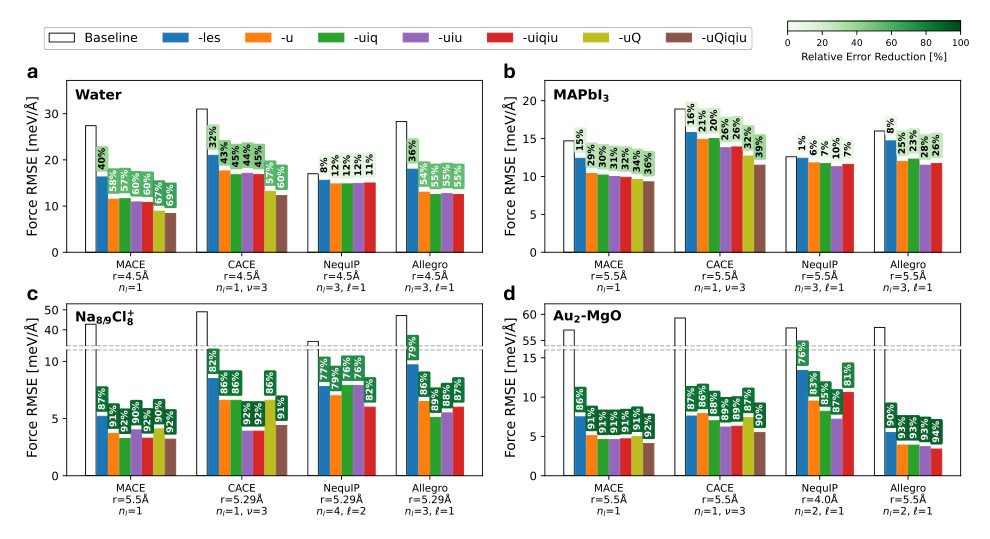
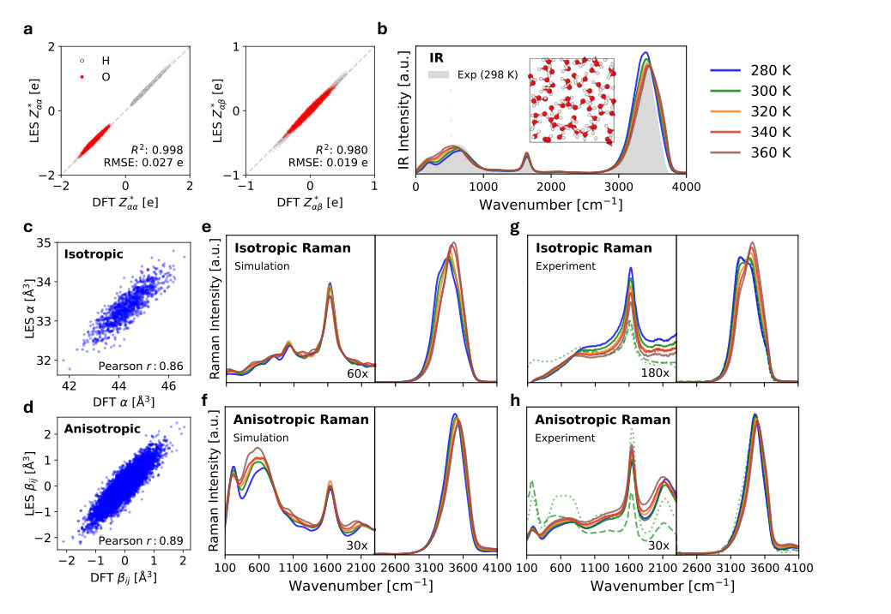
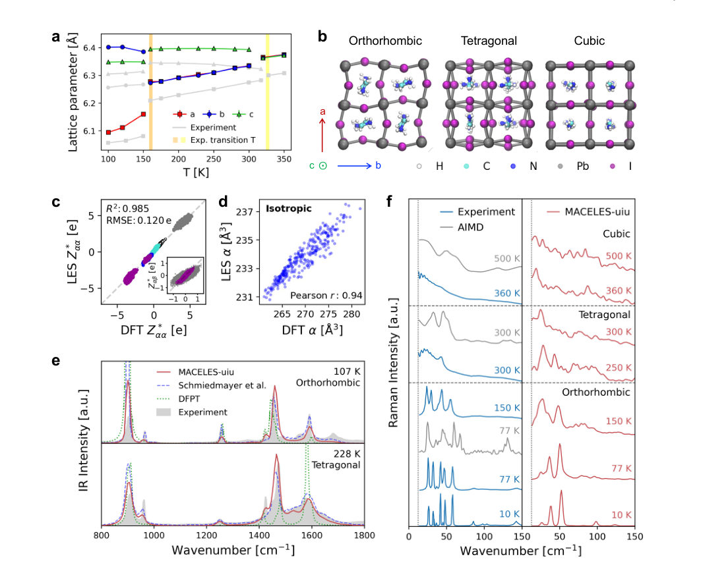
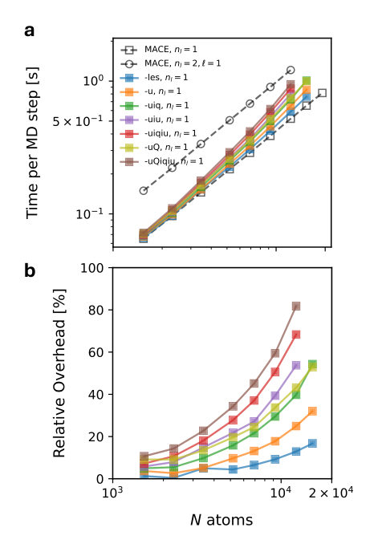
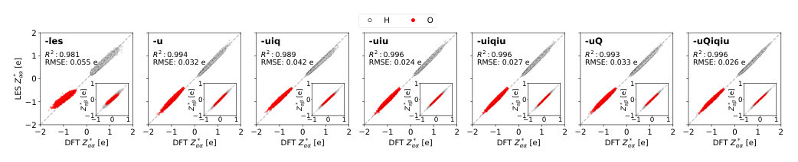
Summary. This paper presents a new machine learning framework that incorporates polarizable atomic multipoles into interatomic potentials. This allows models to capture long-range electrostatic effects and predict complex properties like infrared and Raman spectra without the need for expensive electronic structure labels. It demonstrates significant improvements in accuracy for systems where long-range interactions are critical, such as water and perovskites.
Why it may be interesting. not directly relevant
Main problem. Extending machine learning interatomic potentials (MLIPs) to accurately capture long-range electrostatics and polarization in ionic, polar, and interfacial systems.
Main result. The introduction of a semi-local framework using polarizable atomic multipoles significantly improves potential energy surface accuracy and enables the prediction of physically meaningful electrical responses like Born effective charges and vibrational spectra.
Method. A semi-local framework using local equivariant descriptors to predict latent multipoles (monopole, dipole, quadrupole) combined with a non-self-consistent linear response approach for non-local charge transfer and polarization.
Model / system. The framework is applied to various systems including bulk liquid water, MAPbI3 perovskite, Na8/9Cl+8 clusters, and Au2 on MgO(001) surfaces, utilizing architectures like MACE, CACE, NequIP, and Allegro.
Key observables. Born effective charge (BEC) tensors, polarizabilities, infrared (IR) spectra, Raman spectra, and lattice constants.
Important parameters / regimes. Latent multipoles (q, u, Q), hardness (kappa), polarizability (alpha), and the electronic dielectric constant (epsilon_e).
Assumptions / limitations. Assumes local atomic multipoles capture dominant interactions, treats non-local effects as small corrections, and neglects interactions between induced multipoles in the non-local response calculation.
Figures summary. Figure 1 compares force RMSE reduction across different systems; Figure 2/5/8 show parity plots for BEC tensors and polarizabilities; Figure 3 shows lattice constants and phase transitions in perovskites; Figure 3e/6 show predicted IR and Raman spectra.
Paper structure. The paper identifies the limitations of current MLIPs, introduces the multipole-based semi-local framework, provides the mathematical derivation for the multipole expansion and linear response, details the neural network implementation, and validates the model through benchmarks on various physical systems and spectroscopic properties.
Long-range electrostatics and polarization remain central obstacles to extending machine learning interatomic potentials (MLIPs) to ionic, polar, and interfacial systems. Here, we introduce a semi-local framework for learning electrostatics from energies and forces using polarizable atomic multipoles. Local equivariant descriptors predict environment-dependent latent monopoles, dipoles, and quadrupoles, while residual non-local charge transfer and polarization are captured by non-self-consistent linear response in induced charges and dipoles. Across four diverse benchmarks and four short-range MLIP architectures, the multipole hierarchy and response terms systematically improve potential energy surface accuracy, with the largest gains in systems where long-range effects are essential. More importantly, the learned latent variables recover physically meaningful electrical responses: accurate Born effective charge tensors, emergent polarizabilities, infrared spectra in close agreement with experiments, and semi-quantitative Raman spectra for bulk water and hybrid MAPbI$_3$ perovskite. This systematically improvable, physically transparent framework enables MLIPs trained on standard energy and force labels to predict polarization-sensitive observables.
Authors: Rui Min, Yi-Xiang Wang
Type: theory · Category: other · PDF: https://arxiv.org/pdf/2605.06044v1
Analysis basis: full PDF text, analyzed in chunks
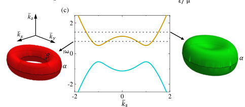
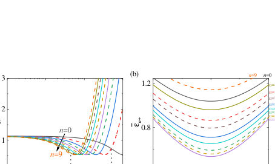
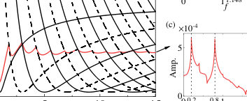
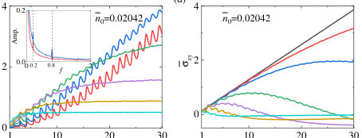
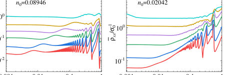
Summary. This paper provides a theoretical framework to identify nodal-line semimetals by predicting two distinct quantum oscillation frequencies arising from a torus Fermi surface. While it successfully identifies a topological signature, it highlights a gap between current theory and experiment regarding the magnitude of magnetoresistivity.
Why it may be interesting. not directly relevant
Main problem. The study aims to identify unambiguous experimental signatures of nodal-line semimetals through magnetotransport properties, specifically focusing on quantum oscillations and nonsaturating magnetoresistivity.
Main result. The authors identify two distinct oscillation frequencies in the low-energy regime as a signature of the torus Fermi surface, though they find a significant discrepancy in the magnetoresistivity ratio compared to experimental values.
Method. A full quantum mechanical study using Landau quantization and the Kubo-Bastin formula to calculate conductivity tensors and chemical potential evolution.
Model / system. A 3D Hamiltonian model for nodal-line semimetals (motivated by EuGa4) featuring a torus-like Fermi surface and a Dirac mass term that breaks PT symmetry.
Key observables. Magnetoconductivity oscillations, magnetoresistivity (MR) ratio, Hall conductivity, and chemical potential oscillations.
Important parameters / regimes. Low-energy vs. high-energy regimes, Dirac mass (M), carrier density (n0), magnetic field (B), and impurity scattering rate (eta).
Assumptions / limitations. The model uses a simplified 1D band/torus model, assumes the zero-temperature limit, and neglects spin Zeeman splitting due to its small magnitude.
Figures summary. Fig 1(a) shows 2D bands in k-space; Fig 2(a) displays Landau level spectra showing nonmonotonic energy shifts; Fig 3(a) shows the evolution of chemical potential.
Paper structure. The paper introduces the motivation from EuGa4, defines the Hamiltonian and torus model, presents the quantum mechanical derivation of Landau levels, analyzes conductivity and oscillations using the Kubo-Bastin formula, and concludes by discussing the discrepancy in MR ratios and potential future improvements.
Understanding the magnetotransport behaviors in topological systems remains alluring, as a lot of intrinsic information could be extracted, e.g., the band structures, Berry phase, Fermi surface, carrier density, and so on. Motivated by the recent magnetotransport developments in nodal-line semimetal, EuGa4, in this paper, we will study the magnetotransport properties of the system, focusing on the quantum oscillations and nonsaturating magnetoresistivity (MR). Firstly, we analyze the chemical potential and magnetoconductivity oscillations with the magnetic field and reveal that there exist two distinct oscillation frequencies, which are caused by the characteristic torus Fermi surface and can be regarded as an important experimental signature of nodal-line semimetals. Then we calculate the MR and find that although the MR is nonsaturating with the magnetic field in the low-energy region, the MR ratio is much smaller than that reported in the experiment.
Authors: Wenlong Yao, Zhigang Li, Guobin Bai, Jianfeng Gao, Jiahan Yu, Junfeng Li, Xiaolei Wang, Jun Luo
Type: experiment · Category: other · PDF: https://arxiv.org/pdf/2605.05667v1
Analysis basis: full PDF text, analyzed in chunks
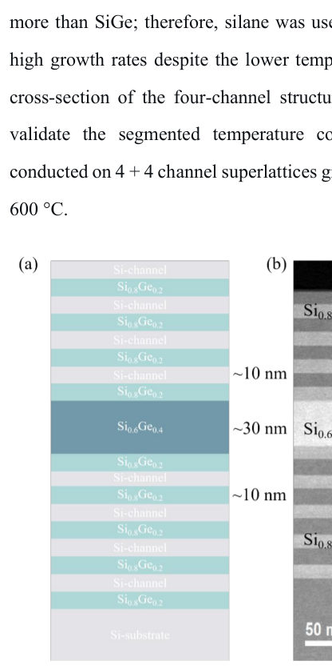
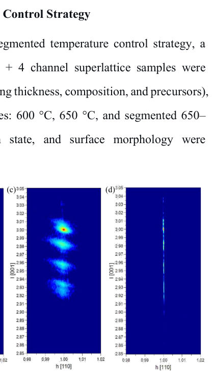
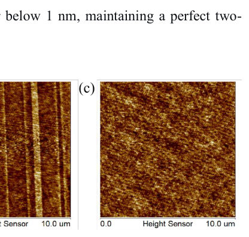
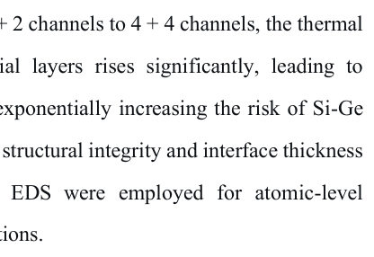
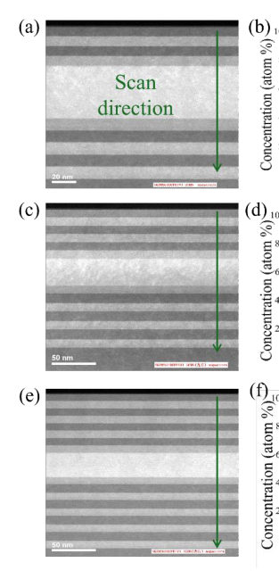
Summary. This paper demonstrates a segmented temperature growth technique to prevent the degradation of Si/SiGe superlattices caused by heat accumulation during manufacturing. By lowering the temperature during later growth stages, the researchers successfully maintained sharp interfaces and precise Ge concentrations in thick, multi-channel structures. This provides a critical material foundation for the development of advanced 2 nm node logic devices like CFETs.
Why it may be interesting. not directly relevant
Main problem. Thermal budget accumulation during the epitaxial growth of multi-channel Si/SiGe superlattices causes Ge-Si interdiffusion, interface broadening, and strain relaxation, which degrades the quality of next-generation CFET logic devices.
Main result. A segmented temperature growth strategy (650 to 600 °C) effectively suppresses Ge diffusion and maintains a fully coherent, pseudomorphic strain state in a 4+4 channel stack with sharp interfaces.
Method. The researchers used reduced-pressure chemical vapor deposition (RPCVD) with a two-step temperature process and characterized the structure using HRXRD, RSM, HRTEM, HAADF-STEM, and EDS.
Model / system. The experimental platform consists of Si/SiGe multi-channel superlattice structures (specifically 2+2, 3+3, and 4+4 channel stacks) grown on Si (100) wafers for CFET architectures.
Key observables. Ge diffusion coefficient, interface transition width, Ge concentration, surface roughness (Rq), strain state (pseudomorphic vs. relaxed), and XRD satellite peaks.
Important parameters / regimes. Growth temperatures (650 °C and 600 °C), Ge concentration (up to 40%), Si channel thickness (10 nm), and total stack thickness (> 210 nm).
Assumptions / limitations. The study assumes the Arrhenius-based estimation of the Ge diffusion coefficient reduction is accurate based on the provided activation energies.
Figures summary. The figures include XRD scans and reciprocal space mapping to show strain and periodicity, TEM/STEM images for interface and atomic-level morphology, and EDS line scans for Ge concentration profiles.
Paper structure. The paper identifies the thermal budget problem, describes the segmented temperature growth method, presents structural characterization results (XRD, TEM, AFM), provides a quantitative analysis of diffusion and concentration degradation from bottom to top, and compares the results to previous literature.
Stacking multiple SiSiGe channels in advanced logic devices faces severe thermal budget accumulation, which degrades interfaces via Ge-Si interdiffusion and strain relaxation.This strategy lowers the Ge diffusion coefficient to 5.6-7% of its value at 650C (Arrhenius estimate), suppressing interdiffusion and preserving pseudomorphic strain. The 4 + 4 channel stack exhibits clear XRD satellite peaks, fully coherent strain state (reciprocal space mapping), sharp interfaces (1.5-2.6 nm transition width) and low RMS roughness (0.08 nm). Quantitative analysis from bottom to top reveals that prolonged high-temperature exposure broadens bottom interfaces and dilutes Ge concentration (from 20% to 18.5%), while the top stack maintains design targets. This work provides a process-physics understanding of thermal budget effects in multi-channel superlattices and establishes a high-quality material foundation for advanced logic devices beyond 2 nm node.
Authors: Wei-Fan Huang, Jin Dai, Jiahui Pan, Mingjian Wen
Type: theory · Category: disordered systems and neural networks · PDF: https://arxiv.org/pdf/2605.05603v1
Analysis basis: full PDF text, analyzed in chunks
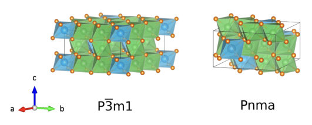
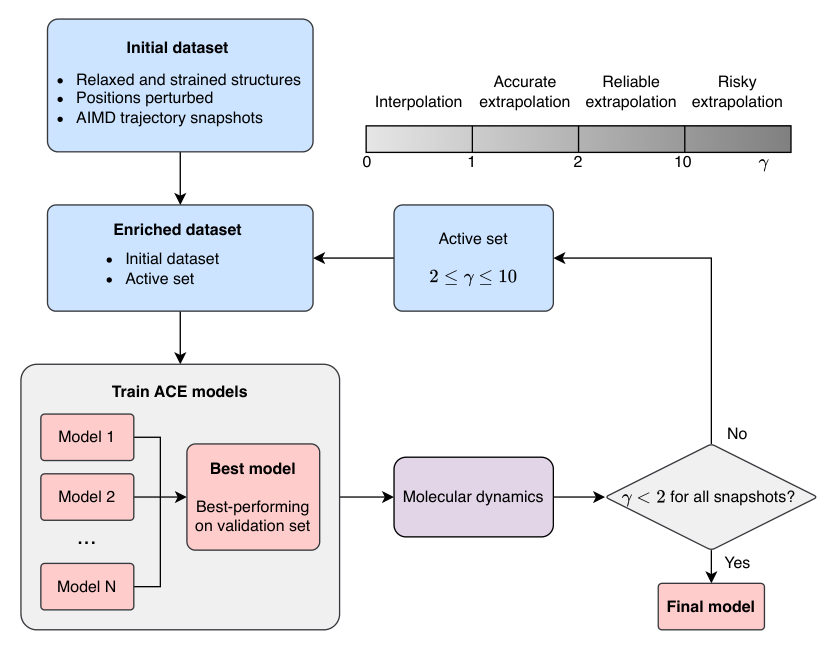
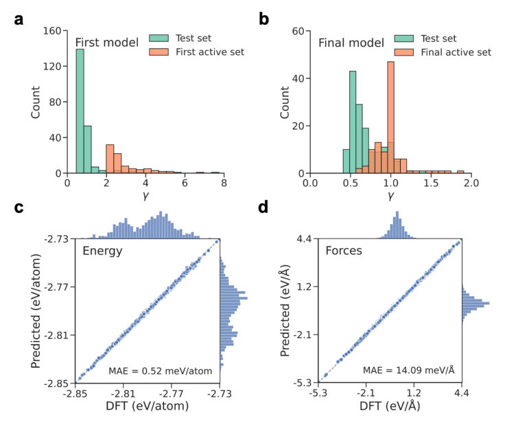
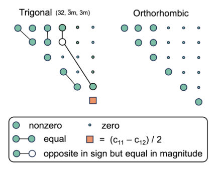
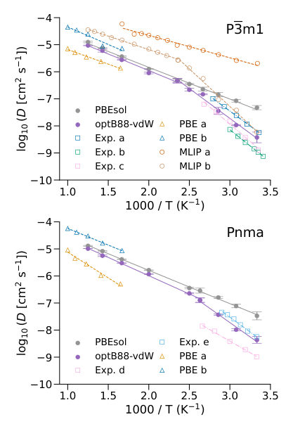
Summary. This paper uses machine learning interatomic potentials to show that mechanical strain can be used as a lever to tune lithium-ion conductivity in halide electrolytes. It reveals that while strain does not change the fundamental diffusion mechanism, it significantly alters the efficiency of ion transport by modifying activation barriers and pre-exponential factors.
Why it may be interesting. not directly relevant
Main problem. Understanding how lattice strain (tensile and compressive) affects Li+ ionic transport mechanisms and conductivity in Li3YCl6 solid electrolytes.
Main result. Strain modulates diffusion efficiency without changing the fundamental transport framework or critical temperature (Tc); tensile strain enhances conductivity by increasing the pre-exponential factor, while compressive strain suppresses it.
Method. Large-scale molecular dynamics simulations driven by an Atomic Cluster Expansion (ACE) machine learning interatomic potential trained via an active learning workflow on DFT data.
Model / system. The physical system is the Li3YCl6 halide superionic conductor in both trigonal (P-3m1) and orthorhombic (Pnma) phases. The model uses an ACE machine learning potential trained with the optB88-vdW functional to capture van der Waals interactions.
Key observables. Li+ diffusivity (D), ionic conductivity (sigma), activation energy (Ea), pre-exponential factor (D0), critical temperature (Tc), and Li+ probability density maps.
Important parameters / regimes. Temperature regimes (low-T 1D hopping vs. high-T 3D cooperative diffusion), strain magnitude (up to +/- 2%), and critical temperature (Tc = 425 K for P-3m1, 380 K for Pnma).
Assumptions / limitations. The study assumes the ACE potential accurately reproduces the underlying DFT energy surface and that isotropic strain is a sufficient proxy for complex mechanical environments.
Figures summary. Figure 1 shows crystal structures; Figure 2 shows the active learning workflow; Figure 3 shows model performance metrics; Figure 8 shows Arrhenius plots of diffusivity; Supplemental figures show clustering processes and Li+ probability density maps.
Paper structure. The paper introduces the problem of strain in solid electrolytes, describes the development and validation of the ACE machine learning potential, analyzes the two-regime diffusion mechanism, investigates the effects of tensile and compressive strain, and concludes with practical implications for battery design.
Solid-state batteries require electrolytes that sustain high ionic conductivity under the mechanical environment of a functioning cell. Lattice strain, arising from stack pressure, thermal cycling, or lattice mismatch at interfaces, can either enhance or suppress Li+ transport in solid electrolytes, yet how it couples to the underlying diffusion mechanism remains poorly understood. Using Li3YCl6 halide superionic conductor, we address this with large-scale molecular dynamics simulations driven by an Atomic Cluster Expansion (ACE) machine learning interatomic potential trained on first-principles data. The ACE model faithfully reproduces experimental and \textit{ab initio} structural, mechanical, and transport properties of Li3YCl6. We find that Li+ diffusion in Li3YCl6 follows a two-regime Arrhenius behavior, crossing over at a critical temperature $T_c$ from one-dimensional hopping at low temperature to three-dimensional cooperative diffusion at high temperature. Strain substantially modulates diffusivity: tensile strain enhances it while compressive strain suppresses it, yet leaves $T_c$ invariant, indicating that strain tunes diffusion efficiency without reshaping the underlying transport framework. In each regime, the mechanistic origin differs: altered activation barriers dominate at low temperature, while modified pre-exponential factors become critical at high temperature. These results establish lattice strain as a design lever for ionic conductivity in Li3YCl6 solid-state electrolytes.
Authors: Asbjoern Slagtern Fjellvaag, Oystein Slagtern Fjellvaag, Amund Ruud
Type: experiment · Category: other · PDF: https://arxiv.org/pdf/2605.05364v1
Analysis basis: full PDF text, analyzed in chunks
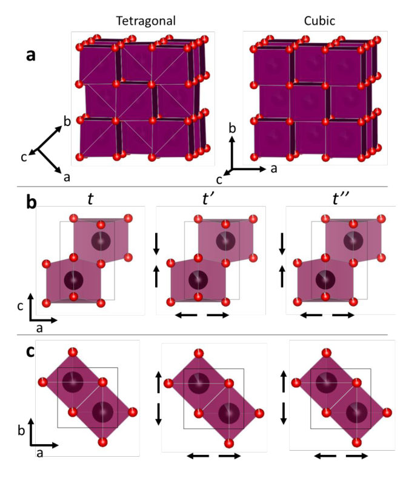
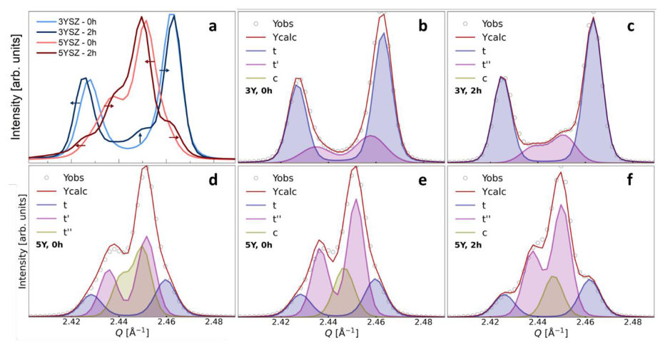
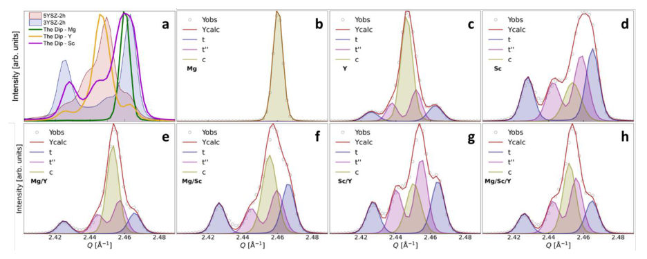
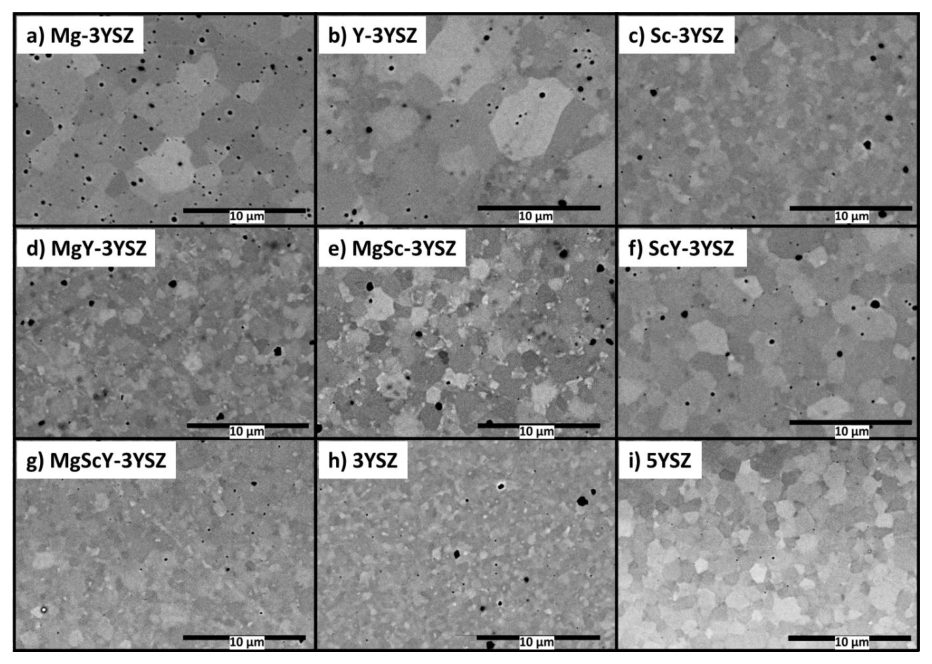
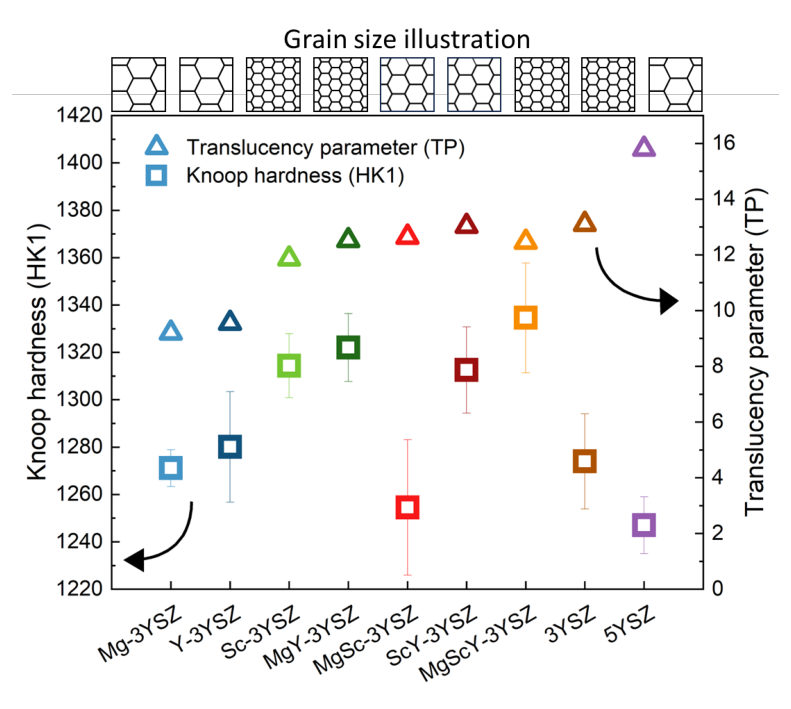
Summary. This paper demonstrates a new liquid infiltration technique to co-dope 3Y-Zirconia with Sc, Mg, and Y. The method allows for the creation of new zirconia compositions with tailored phase distributions, hardness, and translucency, which is highly relevant for dental prosthetics.
Why it may be interesting. not directly relevant
Main problem. Investigating the structural, phase, and mechanical effects of co-doping 3Y-Zirconia (3YSZ) with Sc, Mg, and Y using a liquid infiltration method.
Main result. Liquid infiltration is a viable route for co-doping Zirconia, allowing for controlled phase evolution (e.g., Sc increases tetragonality, Mg leads to a cubic phase) and maintaining or improving hardness.
Method. Pre-sintered 3YSZ discs were immersed in diluted nitric acid solutions containing Sc, Mg, or Y, followed by drying and sintering at 1500 C, with characterization via synchrotron XRD, SEM, and mechanical testing.
Model / system. The physical system consists of Yttria-stabilized zirconia (3YSZ and 5YSZ) modified via wet infiltration of various cations (Sc, Mg, Y) to study phase stability and material properties.
Key observables. Phase fractions (t, t', t'', c), tetragonality (c/a ratio), Knoop hardness, translucency parameter (TP), grain size, and dopant concentration.
Important parameters / regimes. Dopant type (Sc, Mg, Y), cation ionic radii, sintering temperature (1500 C), and sintering dwell time (0 vs 2 hours).
Assumptions / limitations. Assumes all mass increase is due to infiltrated oxide; assumes XRD is capable of distinguishing phases in nearly cubic zirconia; assumes mass increase reflects uniform internal infiltration.
Figures summary. Figure 1 shows Zirconia structural models; Figure 2 shows XRD peak shifts and phase separation; Figure 3 shows XRD comparison of infiltrated samples; Figure 4 shows SEM grain morphology; Figure 5 plots hardness and translucency against grain size; Figure 6 plots structural parameters against cation radii and vacancy concentration.
Paper structure. The paper introduces the infiltration method, describes the experimental setup for doping and sintering, presents structural analysis via XRD, evaluates mechanical and optical properties, and concludes with the viability of the method for dental applications.
The current work has investigated the effect of co-doping 3Y-Zirconia (3YSZ) with Sc, Mg and Y by wet infiltration. Pre-sintered discs of 3YSZ were immersed in diluted nitric acid solutions containing Sc, Mg or Y, and combinations of the three, trapping liquid within the porosities of the samples. Upon drying, the cations are maintained inside the pellet, making the basis for the co-doping. After sintering, mass increase confirms the co-doping effect and X-ray diffraction analysis show clear variations in atomic structure depending on the doping element. Rietveld refinements show that the wet-infiltrated samples contain the tetragonal t, t double prime and cubic c-phase in various fractions depending on the doping elements. Sc-infiltrated samples show a tendency to higher tetragonality, while the Mg-infiltrated sample obtained a single cubic phase. The multi-phase wet-infiltrated samples have a similar phase separation after sintering as 5Y-Zirconia (5YSZ), as calculated by the tetragonality deviation parameter. 3YSZ and 5YSZ sintered for 0 hours and 2 hours at 1500 degrees C show the effect of sintering time on the phase segregation. To evaluate the material properties in an application-based perspective, the Knoop hardness, translucency and grain size was measured. We conclude that liquid infiltration is a viable route to perform co-doping of Zirconia with various co-doping elements.
Authors: Jan Očenášek, Jesper Byggmästar, Guanying Wei, F. Javier Dominguez-Gutierrez, Jorge Alcalá
Type: both · Category: other · PDF: https://arxiv.org/pdf/2605.06114v1
Analysis basis: full PDF text, analyzed in chunks
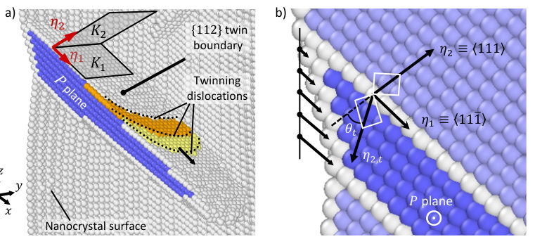
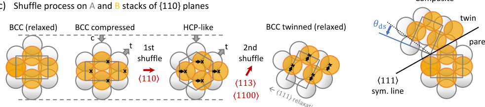
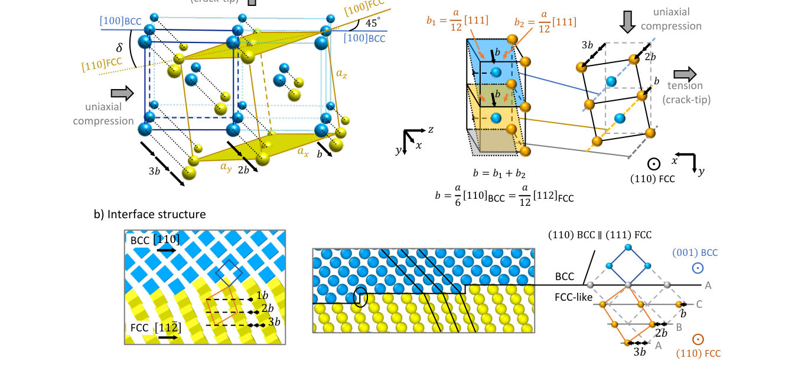
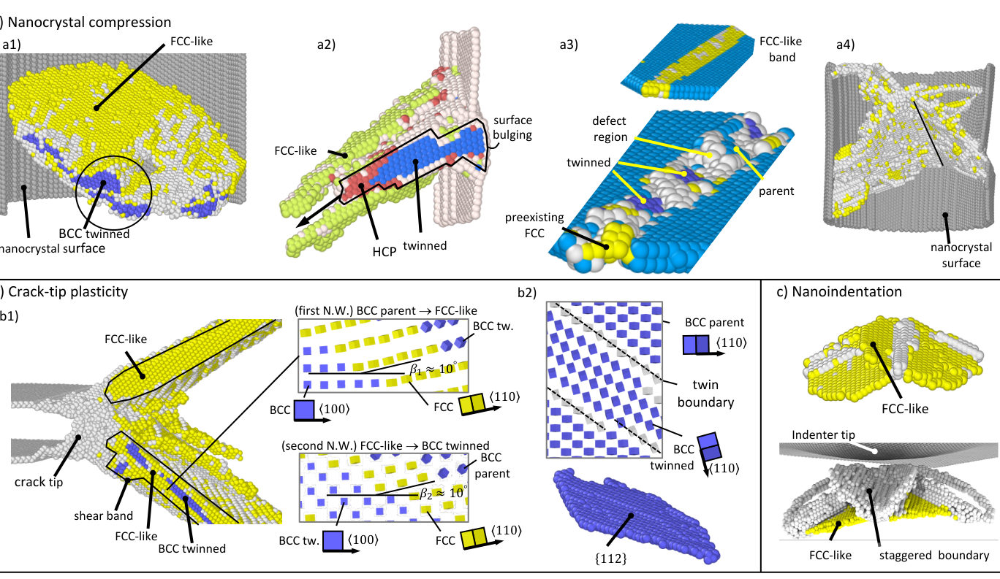
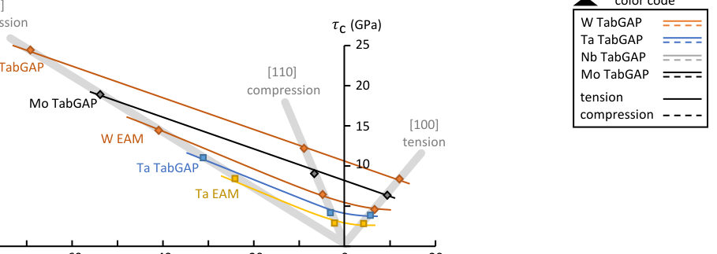
Summary. This paper identifies new, pressure-driven twinning mechanisms in BCC metals that deviate from the classical shear-driven model. It demonstrates that extreme loading can trigger structural phase transitions through transient HCP or FCC phases, providing a unified framework for plasticity in nanocrystals.
Why it may be interesting. not directly relevant
Main problem. Understanding the atomic-scale mechanisms of twinning and plasticity in BCC nanocrystals under extreme loading conditions, specifically how high pressure suppresses classical shear-driven twinning in favor of transformation-mediated pathways.
Main result. The study reveals that increasing pressure suppresses classical shear-driven twinning and activates new pathways: a pressure-driven 'dual-shuffle' process involving transient HCP phases in moderately stiff metals (Fe, Ta, Nb) and an FCC-mediated pathway in stiffer metals (W, Mo).
Method. The researchers used advanced Molecular Dynamics (MD) simulations with quantum-level accurate (tabGAP) and EAM potentials, supplemented by Density Functional Theory (DFT) to analyze energy landscapes and structural transitions.
Model / system. The physical system consists of BCC metallic nanocrystals, specifically Fe, Ta, Nb, W, and Mo, subjected to extreme loading regimes including uniaxial compression, tension, hydrostatic pressure, and nanoindentation.
Key observables. Twin nucleation/growth, twin boundary morphology (staggered vs. straight), correspondence angles, transient HCP/FCC phases, and energy landscapes (fault energies).
Important parameters / regimes. Extreme loading regimes (high pressure/stress), elastic stiffness of the metal, and crystallographic orientations.
Assumptions / limitations. The study assumes the accuracy of the tabGAP and EAM interatomic potentials for capturing phase transitions and relies on the validity of the MD/DFT framework for nanoscale deformation.
Figures summary. Figure 1 shows classic twinning under tension; Figure 2 details the BCC-HCP-BCC dual-shuffle pathway and correspondence angles; Figure 3 visualizes staggered twin boundaries in Ta; Figure 5 shows FCC-like platelets in W/Mo; Figure 6 presents energy landscapes for different twinning routes; Figure 7 shows stress-strain curves.
Paper structure. The paper introduces the problem of BCC plasticity under extreme loads, presents the discovery of the dual-shuffle and FCC-mediated pathways, compares these mechanisms based on material elastic stiffness, validates the findings using energy landscape analysis and potential comparison, and concludes with a unified framework for BCC twinning.
Plasticity in body-centered cubic (BCC) nanocrystals is often associated with twin nucleation phenomena under extreme loading conditions. Here, we reveal unconventional twinning pathways that operate at the intersection of crystal plasticity and structural phase transitions. We show that the classical shear-driven twinning mode becomes progressively suppressed with increasing pressure, giving rise to transformation-mediated twinning pathways involving transient HCP or FCC phases. In BCC Fe, Ta, and Nb nanocrystals of moderate elastic stiffness, plasticity is consistently initiated by an elastic instability that triggers a dual-shuffle process mediated by stable or metastable hexagonal closed-packed (HCP) phases. This pathway operates independently of the characteristic {112} twin boundary planes and is driven by compression, challenging the conceptual paradigm for metal plasticity in which plastic deformation arises from shear stresses resolved on specific planes. By contrast, in the archetypal elastically stiffer BCC Mo and W nanocrystals, plastic deformation proceeds via two alternative twinning pathways associated with shear-driven elastic instabilities mediated by highly-distorted face-centered cubic (FCC) phases. Comprehensive analyses of the energy landscapes to the competing nanoscale twinning modes provide mechanistic insight into their activation, establishing a unified framework for transformation-mediated twinning in BCC nanocrystals across a broad range of loading conditions.
Authors: Xing He, Chiou Yang Tan, Issam Khayr, Zach Van Fossan, Richard J. Spieker, Dayu Zhai, Sarah Anderson, Dinesh Shukla, Suchismita Sarker, Javier Garcia-Barriocanal, Turan Birol, Martin Greven
Type: both · Category: strongly correlated electrons · PDF: https://arxiv.org/pdf/2605.05612v1
Analysis basis: full PDF text, analyzed in chunks
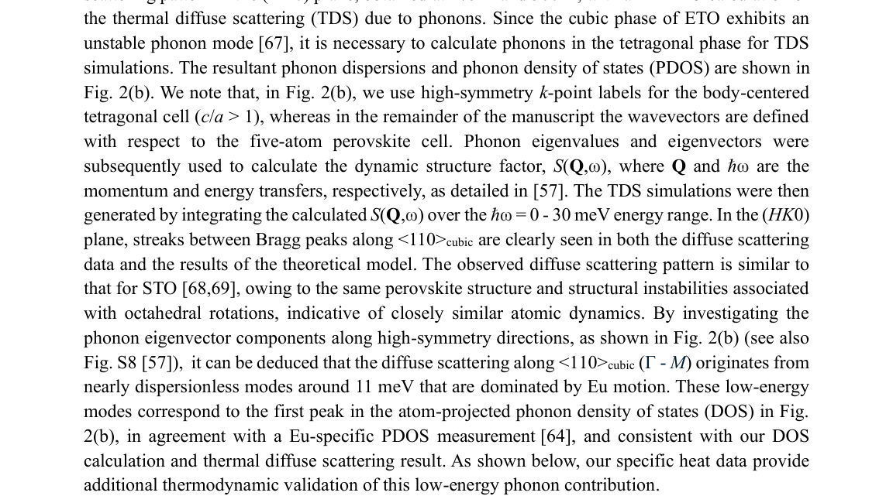
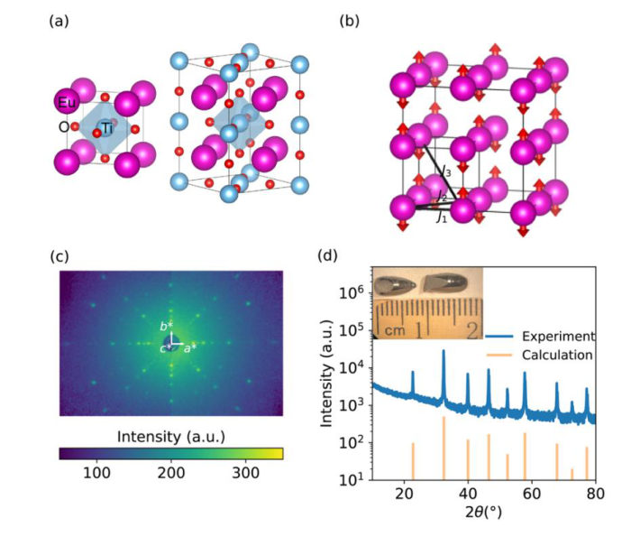
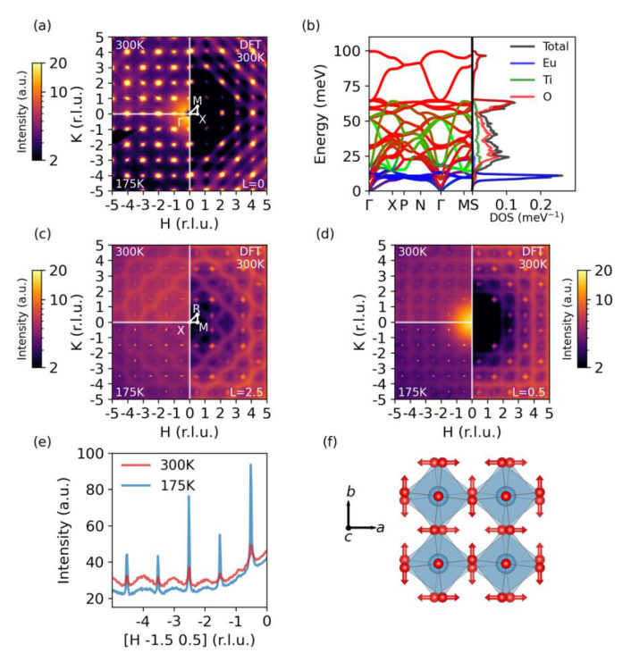
Summary. This paper demonstrates that oxygen-vacancy doping in EuTiO3 creates a distinct phase diagram compared to cation substitution, driving a transition from antiferromagnetic to ferromagnetic order. By reaching high carrier concentrations, the authors reveal a metallic state with tunable magnetic properties and provide a detailed look at the underlying lattice dynamics.
Why it may be interesting. not directly relevant
Main problem. The study investigates how oxygen-vacancy doping tunes the charge-transport properties and magnetic order in EuTiO3, specifically exploring the transition from antiferromagnetic to ferromagnetic states.
Main result. Oxygen-vacancy doping induces a transition from antiferromagnetic to ferromagnetic order in the metallic state, with a maximum Curie temperature of approximately 11 K at high carrier concentrations.
Method. The researchers used CaH2 as an oxygen getter for sample preparation, combined with transport (resistivity, Hall effect), magnetism (DC susceptibility), and structural (synchrotron X-ray diffuse scattering) measurements, supported by DFT+U simulations.
Model / system. The physical system is EuTiO3-delta, a perovskite oxide that transitions from an antiferromagnetic insulator to a metallic state via oxygen-vacancy doping. The electronic structure is modeled using a three-band parabolic model for Ti-d bands.
Key observables. Carrier concentration (nH), resistivity (rho), magnetic susceptibility (chi), Curie temperature (TC), Neel temperature (TN), and X-ray diffuse scattering patterns.
Important parameters / regimes. Carrier concentration up to 10^21 cm^-3, magnetic transition temperatures (TN approx 5.5 K, TC approx 11 K), and Lifshitz transition points.
Assumptions / limitations. The analysis of the A coefficient at highest doping is noted as less reliable due to temperature range limitations; the electronic structure is approximated using a three-band parabolic model.
Figures summary. Figure 1 shows the structural phase transition and G-type AFM order; Figure 3 displays synchrotron X-ray diffuse scattering patterns.
Paper structure. The paper introduces the problem of oxygen-vacancy doping, details the experimental and computational methods, presents the results regarding transport and magnetic phase diagrams, discusses structural/lattice dynamics via X-ray scattering, and concludes with a comparison of the findings to existing cation-doping studies.
The stoichiometric antiferromagnetic insulator EuTiO$_3$ is proximate to a ferroelectric phase. Whereas cation substitution has been used as a tuning parameter to introduce charge carriers and manipulate the magnetism, the effects of oxygen-vacancy doping have been less explored. Here we report a detailed study of the charge transport and magnetic properties of metallic, oxygen-vacancy-doped EuTiO$_{3-δ}$. Using CaH$_2$ as an oxygen getter to achieve a higher carrier concentration than previously reported, we find that the phase diagram of the oxygen-vacancy-doped system is distinct from that obtained via cation doping. In particular, we uncover a change from antiferromagnetic to ferromagnetic order in the metallic state, with a maximum Curie temperature of TC $\approx$ 11 K at the highest carrier concentration of n $\approx$ 10$^{21}$ cm$^{-3}$. These findings are supported by density functional theory calculations, which indicate a significant change in the nearest-neighbor magnetic exchange constant with increasing electron doping. We also present x-ray diffuse scattering and complementary first-principles results that reveal that, similar to the prominent incipient ferroelectric perovskite SrTiO$_3$, the data for EuTiO$_3$ are consistent with thermal diffuse scattering and with the absence of quasi-elastic contributions. Finally, we report specific heat measurements that confirm the magnetic transition temperatures deduced from magnetization measurements and corroborate the lattice dynamics picture inferred from the diffuse scattering data.
Authors: Evgeniya Moshkina, Yuriy Knyazev, Ekaterina Smorodina, Oleg Bayukov, Maxim Molokeev, Evgeniy Khramov, Andrey Kartashev, Ruslan Batulin, Mikhail Cherosov, Dmitriy Velikanov, Evgeniy Eremin, Mikhail Rautskii, Dieter Kokh, Mikhail Platunov, Leonard Bezmaternykh
Type: experiment · Category: disordered systems and neural networks · PDF: https://arxiv.org/pdf/2605.05885v1
Analysis basis: full PDF text, analyzed in chunks
Summary. This paper investigates the magnetic properties of (Fe,Mn,Ga)2O3 bixbyites to resolve discrepancies in literature regarding their magnetic ordering. It demonstrates that the reported room-temperature ferrimagnetism is actually due to trace spinel impurities rather than an intrinsic property of the bixbyite phase. The study also identifies low-temperature magnetic anomalies as spin-glass-like freezing.
Why it may be interesting. not directly relevant
Main problem. To resolve conflicting reports regarding the magnetic ordering of (Fe,Mn,Ga)2O3 bixbyites and determine if the observed room-temperature ferrimagnetism is an intrinsic property or caused by impurities.
Main result. The study concludes that the low-temperature magnetic anomalies are consistent with spin-glass-like freezing rather than long-range antiferromagnetism, and the reported room-temperature ferrimagnetism is an extrinsic effect caused by trace spinel-type impurities.
Method. The researchers used flux-grown single crystals and employed a combination of magnetometry, Mossbauer spectroscopy, X-ray absorption spectroscopy (XAS), Electron Spin Resonance (ESR), and specific heat measurements.
Model / system. The physical system consists of cubic (Fe,Mn,Ga)2O3 bixbyites (space group Ia) with varying Mn:Fe:Ga ratios, characterized by two inequivalent octahedral metal sites (M1 and M2) and significant cation disorder.
Key observables. Magnetic susceptibility, magnetization, magnetic transition temperature (TN and TC), effective magnetic moment, hyperfine parameters (isomer shift, quadrupole splitting), and ESR g-factors.
Important parameters / regimes. Cation distribution (8b and 24d sites), Mn:Fe:Ga ratios, cooling rates during synthesis, and the presence of spinel-type impurity phases.
Assumptions / limitations. The study assumes that the observed high-temperature magnetic signal in certain samples can be modeled by subtracting a scaled contribution from a spinel impurity phase.
Figures summary. Figure 1 shows the bixbyite crystal structure; Figure 2 displays temperature-dependent magnetic susceptibility; Figure 3 shows field-dependent magnetization; Figure 7 presents XANES spectra; Figure 8 shows EXAFS Fourier transforms; Figure 9 illustrates temperature derivatives of magnetic properties.
Paper structure. The paper introduces the controversy in bixbyite magnetism, describes the synthesis and structural characterization of various Fe-Mn-Ga oxides, presents magnetic and spectroscopic results to analyze low-temperature spin-glass behavior, identifies the spinel impurity as the source of ferrimagnetism, and concludes with the impact of chemical purity on reported properties.
The cubic Fe2-xMnxO3 is an intriguing material that has recently been investigated for various applications, including lithium-ion battery anodes, catalysts, energy storage media, humidity sensors, and photocatalysts. Despite its wide range of promising applications, the magnetic properties of Fe2-xMnxO3 remain controversial, with different sources reporting conflicting information regarding the type of magnetic ordering, phase transition temperature, and magnetic moment of this compound. This work presents a study of the magnetic state of three Fe2-xMnxO3:Ga solid solutions with varying Mn:Fe:Ga ratios, along with one gallium-free Fe2-xMnxO3 reference sample. We performed a detailed analysis of the actual chemical composition and crystal structure of the synthesized samples using energy-dispersive X-ray spectroscopy (EDX), powder X-ray diffraction (XRD), and X-ray absorption spectroscopy (XAS) to evaluate compositional differences. The magnetic states of the three Fe2-xMnxO3:Ga samples and the gallium-free Fe2-xMnxO3 were investigated using magnetometry and Mossbauer spectroscopy. The low-temperature magnetic anomalies were found to be more consistent with spin-glass-like freezing than with conventional long-range antiferromagnetic ordering. Although variations in magnetic behavior were observed and found to depend on composition and the cooling rate during synthesis, our results demonstrate that these factors do not account for the drastically different magnetic properties reported for similar bixbyite-type oxides. Instead, the apparent room-temperature ferrimagnetism observed in one sample is most likely extrinsic and can be attributed to a trace spinel-type impurity phase, as supported by magnetizations and ESR measurements. Thus, the origin of these discrepancies lies primarily in the chemical purity of the samples and, to a significant extent, in the synthesis technique employed.